About Me
I am a gap year student applying for Fall 2026 PhD programs after completing my Master's at Sun Yat-sen University. Currently, I am a research intern at NUS and Shanghai AI Lab supervised by Prof. Michael Qizhe Shieh and Prof. Yu Cheng.
My research journey began with advancing efficient and reliable reasoning in language models. Through CMR Scaling Law, SRM, and CoRE, I developed methods to inject domain knowledge and optimize reasoning efficiency across training and inference stages. However, they also revealed a fundamental limitation: language alone cannot capture the full spectrum of reasoning. Real-world problems often require spatial and visual understanding that words struggle to encode (EMMA, STARE benchmark).
This shifted my focus toward unified multimodal intelligence, enabling models to think in modalities, not just with them. Through AdaReasoner and ThinkMorph, I explore how modalities function as complementary tools: language for logic, vision for spatial operations. My goal is to build systems that think beyond boundaries, seamlessly integrating diverse modalities to form genuine multimodal reasoning that is both efficient and reliable.
Beyond research, I embrace diverse experiences and challenges. (Click below to explore more)
Beyond Research Many Roles, One Journey
-
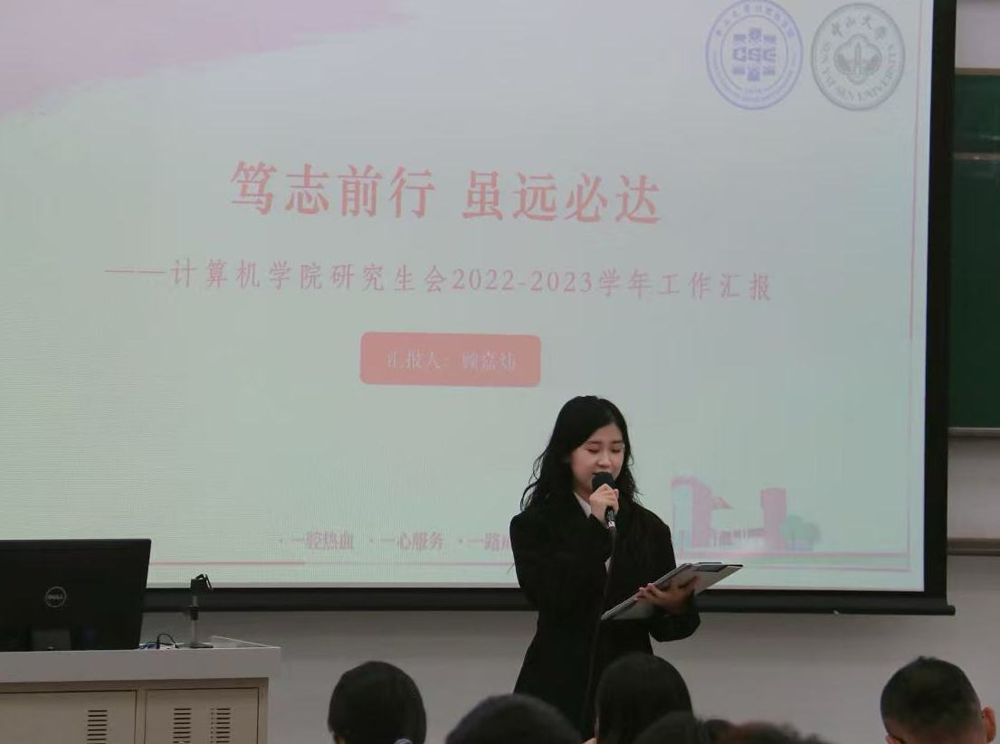
Student Union President Led the student union at Sun Yat-sen University, developing leadership and presentation skills.
-
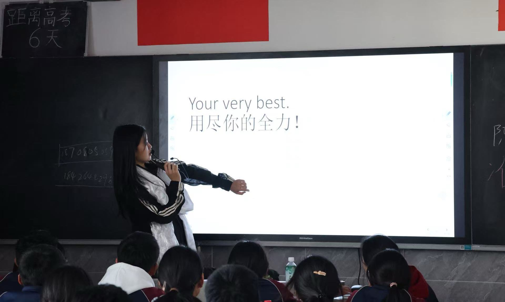
Rural Volunteer Teacher Volunteered as a high school math teacher in Tibet, inspiring students and fostering their love for learning.
-
Adventure Enthusiast Passionate about challenges, from skydiving to bungee jumping, constantly pushing personal boundaries.
-
More Roles Unlocking... Continuously exploring new experiences and challenges.
News
-
Nov 2025
-
July 2025SRM has received the Best Paper Honourable Mention Award at ACL 2025!
-
July 2025EMMA has been accepted as an Oral presentation (Top 1%) at ICML 2025!
-
May 2025SRM has been accepted as Oral presentation (Top 3%) at ACL 2025!
-
Nov 2024
Selected Publications
* denotes equal contribution
-
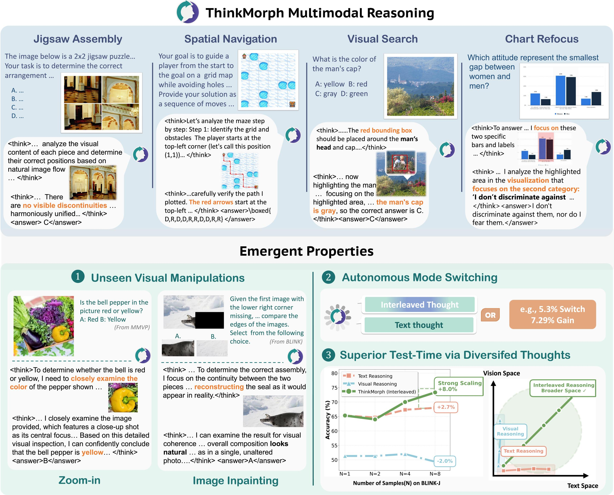 🔥 NewestThinkMorph enables true multimodal chain-of-thought reasoning where text and vision complement each other, achieving emergent intelligence and strong generalization with just 24K training samples.
-
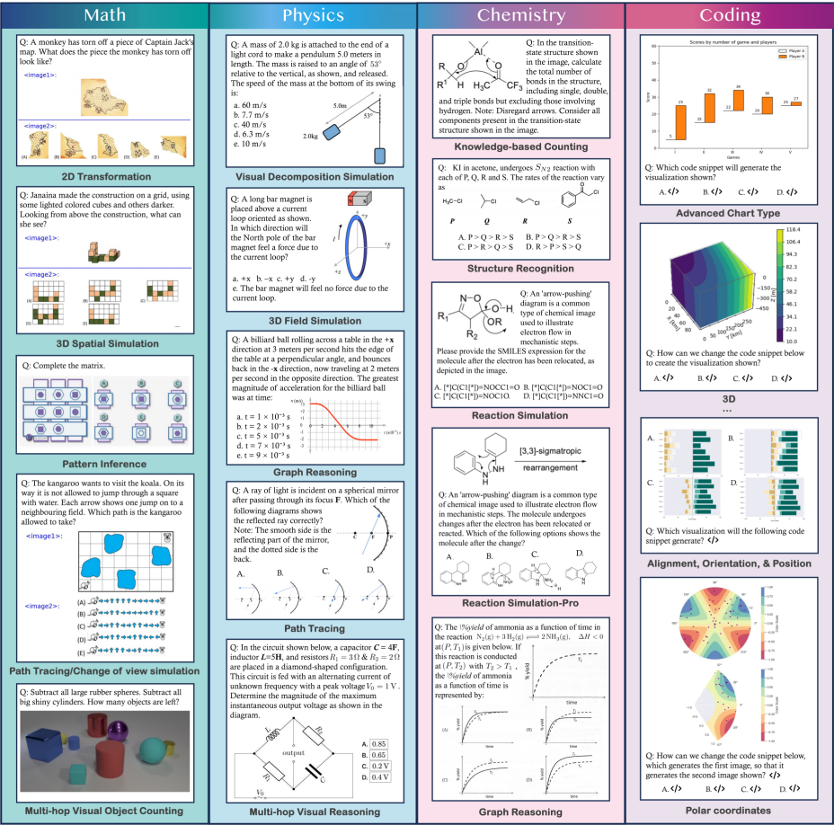 ICML 2025 OralWe contribute EMMA (Enhanced MultiModal reAsoning), a benchmark targeting organic multimodal reasoning across mathematics, physics, chemistry, and coding. SOTA models struggle big time.
-
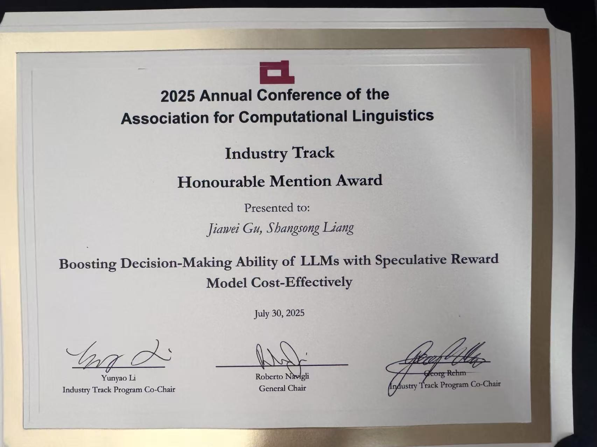 ACL 2025 Oral + 🏆 Best Paper Honorable MentionWe propose Speculative Reward Models that dramatically improve LLM decision-making efficiency while maintaining high accuracy.
-
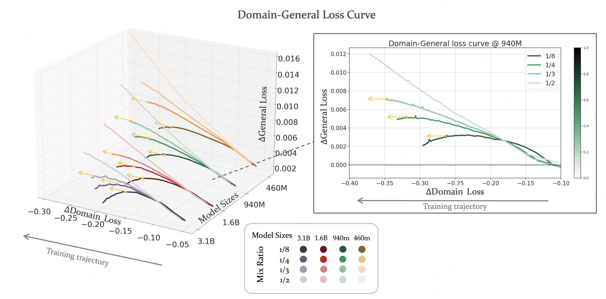 EMNLP 2024We propose CMR Scaling Law to predict critical mixture ratios for continual pre-training, enabling efficient domain adaptation while preventing catastrophic forgetting.
Awards
-
Aug 2025Best Paper Honourable Mention Award, ACL 2025
-
Sep 2024(≤1%)37 Interactive Entertainment College Student Empowerment Scholarship
-
Sep 2023(≤1%)Shenzhen Stock Exchange Scholarship
-
Feb 2023(≤1%)Five-star Volunteers of Sun Yat-sen University
-
Mar 2023(≤5%)Backbone of Excellent Postgraduate Association of Sun Yat-sen University
-
Jun 2022(≤10%)Outstanding Student Scholarship First Prize of Sun Yat-sen University
-
Jun 2021(≤5%)Excellent Inspirational Scholarship of Sun Yat-sen University
Talks
All Publications
-

-
 ICML 2025 (Oral, top 1%)
ICML 2025 (Oral, top 1%) - 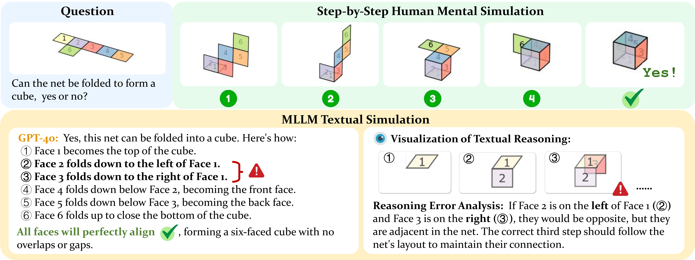
-
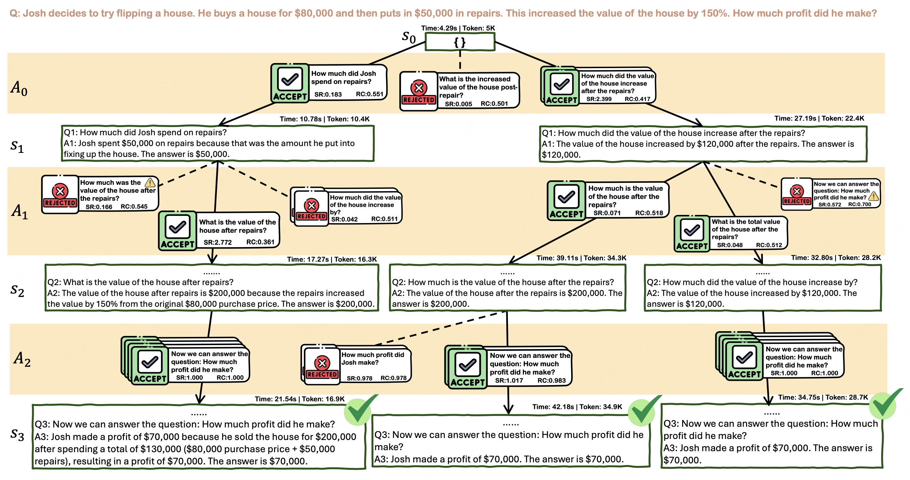
ACL 2025 (Oral, top 3%), Best Paper Honorable Mention Award
- 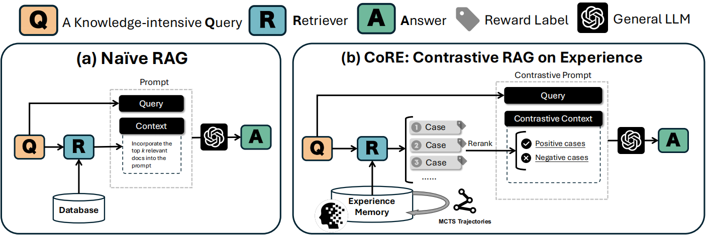
-

- 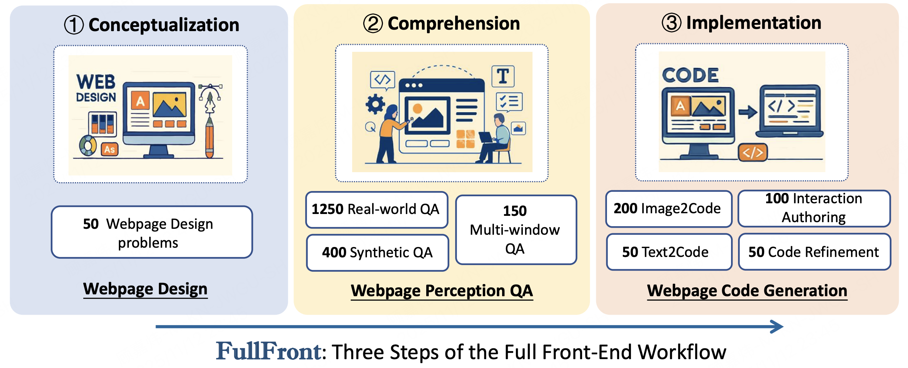
- 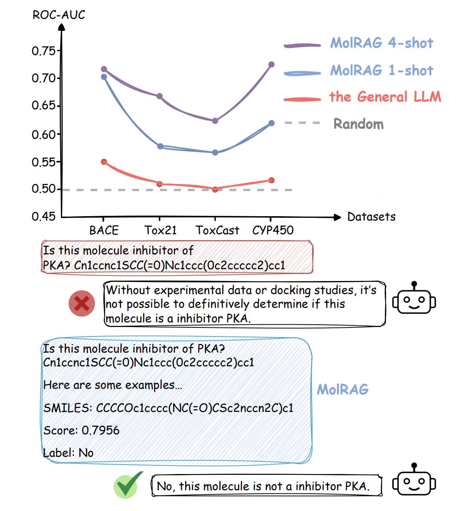
- 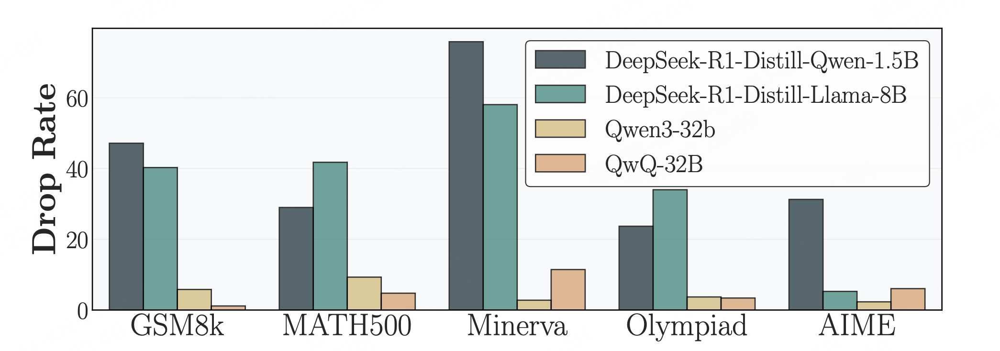
Academic Services
Conference Reviewer: WWW2025, ICLR 2026, CVPR2026, ACL Rolling Review